Gérer les comptes, les groupes, les droits, le catalogue, les notifications, le RGPD, les sauvegardes et le PC qui héberge Xchange.
Un administrateur gère les comptes, les groupes, le catalogue et les réglages, et voit toutes les demandes. Il a tous les droits de la matrice (chapitre 4), avec deux exceptions volontaires. D'abord, une demande confidentielle n'est visible que par son auteur, la personne qui la traite et les membres du groupe auquel elle est affectée. Un administrateur qui n'en fait pas partie ne la voit pas, même dans la corbeille. Ensuite, les discussions sont privées : un administrateur ne lit que les messages qui lui sont signalés (chapitre 8).
Administration > Utilisateurs
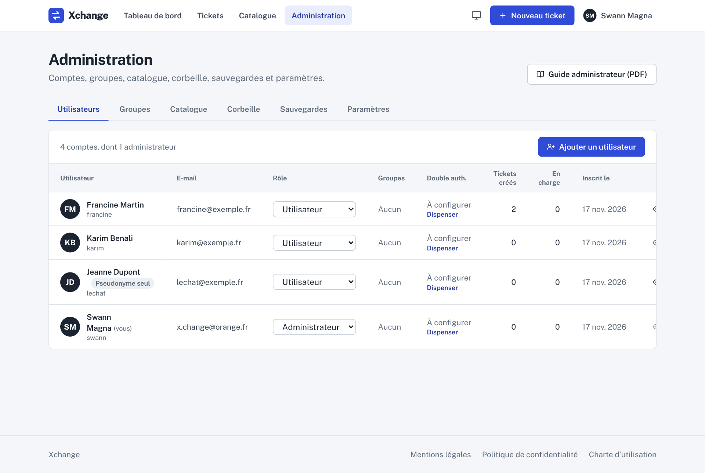
« Ajouter un utilisateur » crée un compte avec un identifiant et un mot de passe que vous transmettez à la personne. Les visiteurs peuvent aussi s'inscrire eux-mêmes tant que l'inscription est ouverte (ALLOW_REGISTRATION=true). À l'inscription, la personne accepte la charte et la politique de confidentialité, peut demander à rejoindre des groupes et peut choisir de n'afficher que son pseudonyme.
La liste déroulante passe un compte d'Utilisateur à Administrateur et inversement. Ne nommez administrateur que des personnes de confiance : elles voient presque tout.
Le bouton de réinitialisation génère un mot de passe provisoire, affiché une seule fois. Transmettez-le à la personne par un autre moyen que l'e-mail si possible ; elle le change ensuite dans « Mon compte ». Toutes ses sessions ouvertes sont fermées.
| Affiché | Signification |
|---|---|
| Activée | La personne utilise une appli d'authentification. |
| À configurer | Elle la configurera à sa prochaine connexion. |
| Refusée par la personne | Elle a choisi de ne pas l'utiliser, après avoir lu les risques. Le choix est enregistré avec sa date, comme étant le sien. |
| Dispensé (admin) | Vous l'en avez dispensée, par exemple faute de smartphone. |
« Dispenser » et « Exiger » basculent la dispense ; les sessions de la personne sont fermées dans les deux cas. En cas de téléphone perdu, réinitialisez sa double authentification : elle la reconfigure à la connexion suivante, et ses navigateurs de confiance sont oubliés.
Le badge « Pseudonyme seul » signale une personne qui a caché son prénom et son nom aux autres membres. Vous les voyez dans cette liste et dans l'onglet RGPD ; partout ailleurs, y compris pour vous, seul le pseudonyme apparaît.
L'icône en forme d'œil ouvre Xchange comme la personne le voit, pendant une heure au plus, pour la dépanner. Un bandeau orange rappelle la situation, avec « Revenir à mon compte ».
Supprimer un compte efface la ligne du compte ; ses demandes restent sans auteur. Pour une personne qui demande l'effacement de ses données, préférez l'anonymisation dans l'onglet RGPD (chapitre 12) : elle efface aussi ses pièces jointes, ses journaux et ses traces de sécurité, et laisse une trace propre de votre réponse.
Administration > Groupes
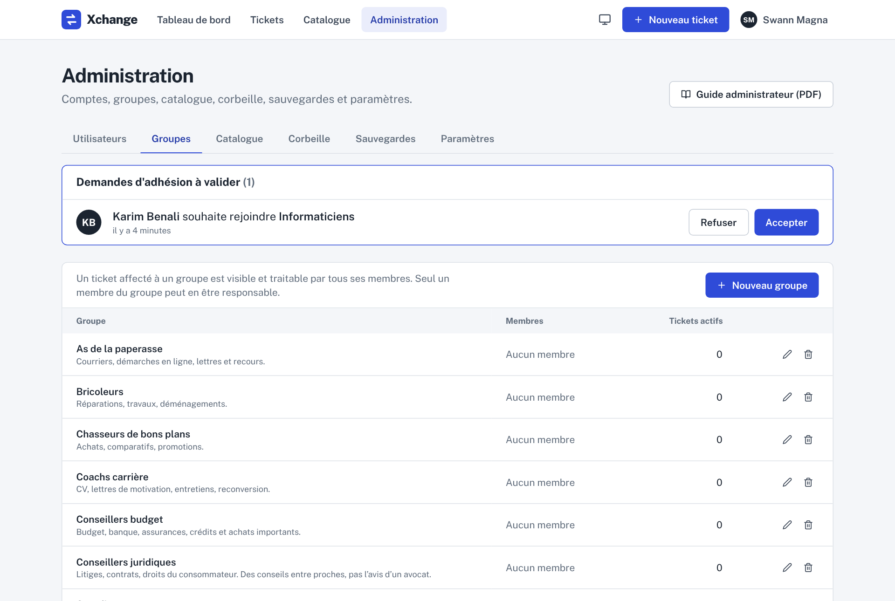
Un groupe rassemble les personnes qui traitent un type de demande (Informaticiens, Fiscalistes, Bricoleurs…). Une demande affectée à un groupe est visible par ses membres, qui peuvent la prendre en charge, la confier à l'un d'eux ou la transférer à un autre groupe. Seul un membre du groupe peut en être responsable.
Administration > Paramètres > Droits et visibilité
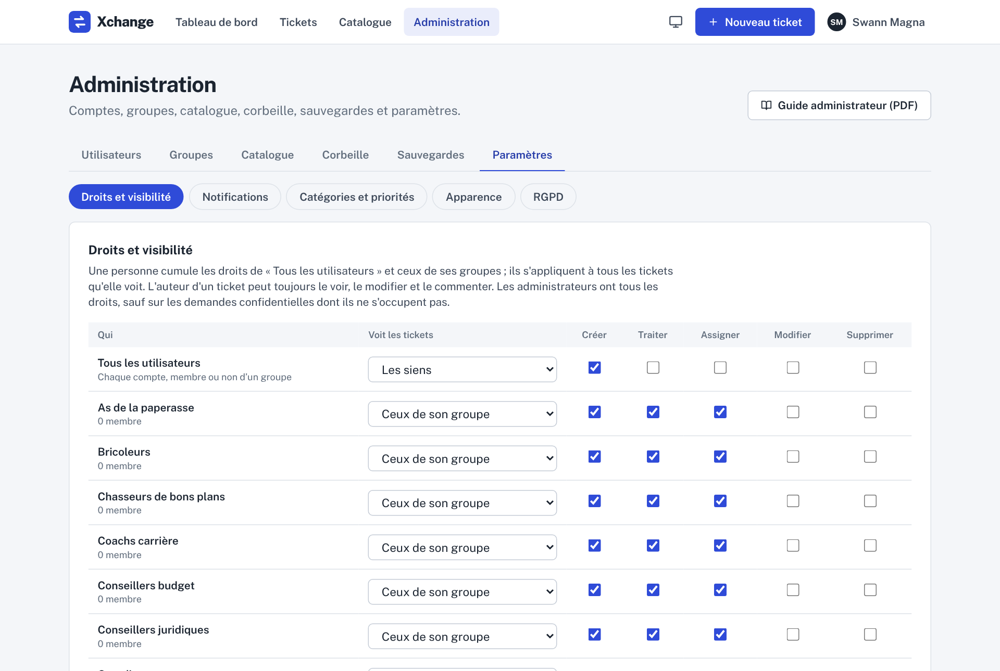
Chaque ligne fixe ce que voient et peuvent faire ses membres. Une personne cumule la ligne « Tous les utilisateurs » et celles de tous ses groupes.
| Colonne | Effet |
|---|---|
| Voit les tickets | Les siens ; ceux de son groupe ; tous. |
| Créer | Peut faire une demande. |
| Traiter | Change le statut, prend en charge. |
| Assigner | Confie une demande à quelqu'un ou la transfère à un groupe. |
| Modifier | Change le titre, la description, la priorité des demandes qu'elle voit. |
| Supprimer | Met une demande à la corbeille. |
L'auteur d'une demande peut toujours la voir, la modifier et la commenter.
Sous la matrice, chaque catégorie peut être réservée à certains groupes : ces groupes voient toutes les demandes de la catégorie, et la catégorie n'est plus visible par le droit « tous » des autres groupes. Par défaut, les sujets personnels (impôts, budget, carrière, santé, droit) ne sont visibles que par leur groupe.
L'auteur coche « Demande confidentielle » à la création, ou plus tard. Seuls l'auteur, le responsable et les membres du groupe d'affectation la voient. Les e-mails n'en donnent ni le titre ni le contenu.
Administration > Record producers
Le module fonctionne comme dans ServiceNow : chaque formulaire du catalogue est un record producer qui crée un enregistrement dans la table des demandes. Il a trois volets : Formulaires, Table des champs et Table des variables. Un formulaire ne peut alimenter que la table des demandes.
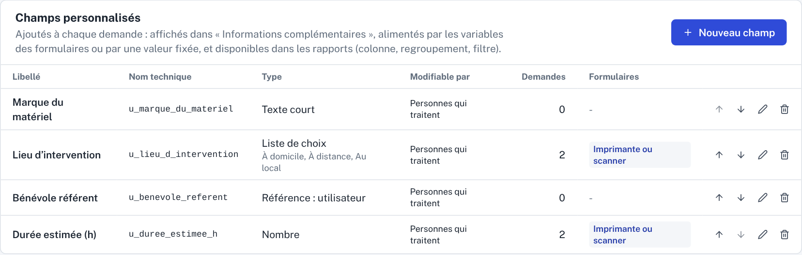
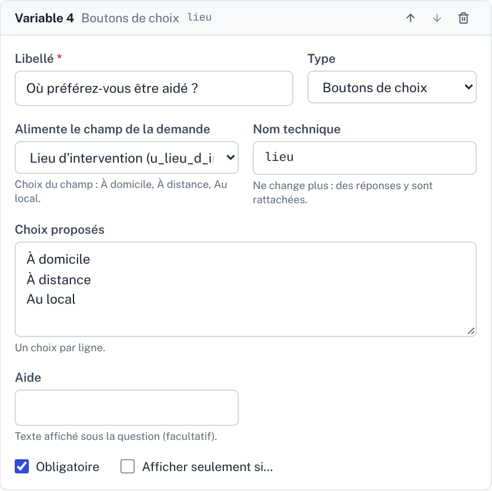
Dans chaque variable, « Alimente le champ de la demande » ne propose que les champs compatibles avec son type, et un même champ ne peut être alimenté que par une variable du formulaire. À l'enregistrement, Xchange vérifie aussi :
Le nom technique d'une variable est tiré de son libellé ; il sert aux règles d'affichage et aux rapports, et ne change plus une fois le formulaire enregistré.
« Valeurs fixées des champs » écrit une valeur dans un champ personnalisé de chaque demande créée, comme un modèle. Une variable associée au même champ la remplace quand elle est remplie. « Ce que crée ce formulaire » résume, champ par champ, d'où vient la valeur de la demande créée.
Toutes les variables de tous les formulaires : ordre, libellé, nom technique, type, champ associé et nombre de réponses, avec une recherche et des filtres par formulaire et par mappage.
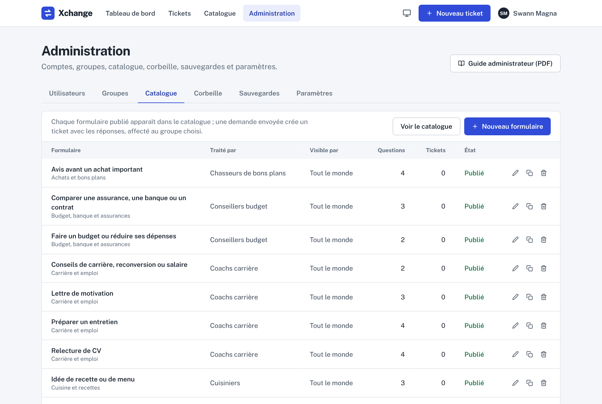
Un formulaire guide la personne avec des questions adaptées et crée une demande déjà rangée : bon groupe, bonne catégorie, bonne priorité.
Rubrique, description, groupe qui traite les demandes, catégorie et priorité des demandes créées, visibilité (tout le monde ou certains groupes), publication. « Dupliquer » sert de point de départ pour un formulaire proche.
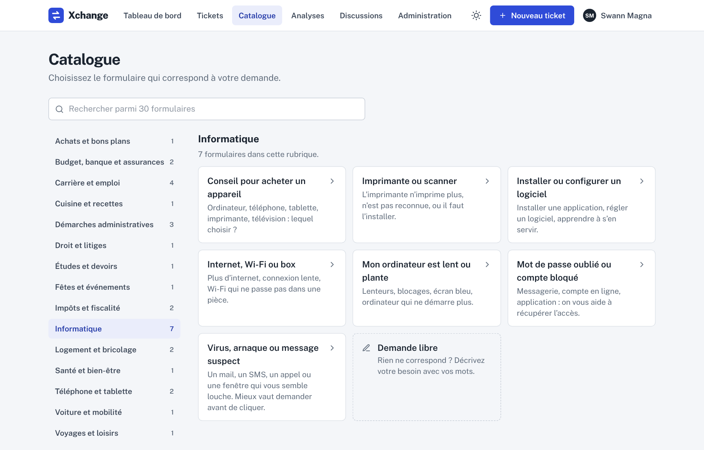
Le menu de gauche liste les rubriques avec leur nombre de formulaires (en pastilles sur téléphone). « Les plus demandés » apparaît en tête dès que des formulaires ont été envoyés : ce sont les 6 plus utilisés des trois derniers mois. La recherche porte sur tout le catalogue. Une rubrique sert de regroupement : évitez les rubriques d'un seul formulaire quand elles peuvent être fusionnées.
Administration > Corbeille
Une demande supprimée va à la corbeille. Vous pouvez la restaurer, ou la supprimer définitivement avec ses fichiers. La corbeille se vide automatiquement après le délai réglé dans l'onglet RGPD (30 jours par défaut).
Administration > SLA
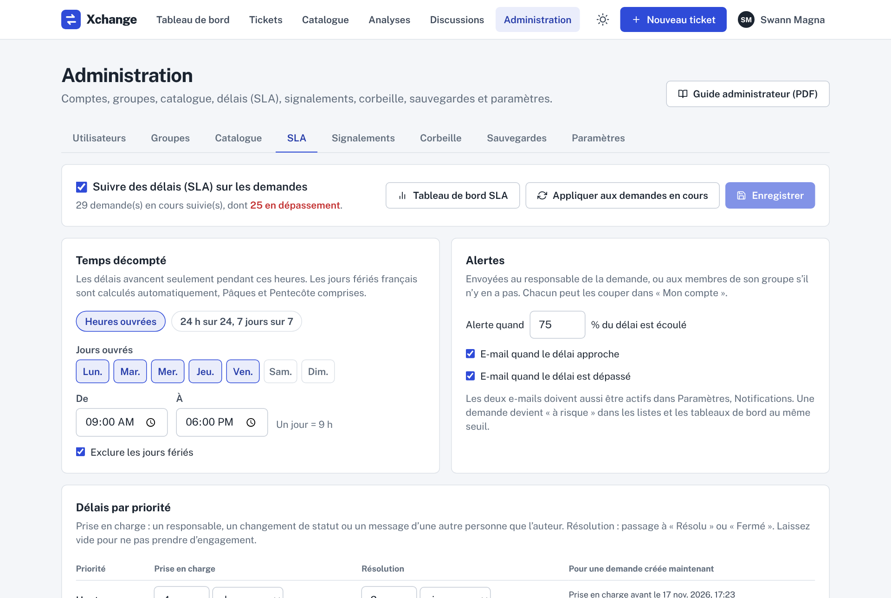
Un SLA est un engagement de délai. Xchange en suit deux pour chaque demande :
| Priorité | Prise en charge | Résolution |
|---|---|---|
| Haute | 4 heures ouvrées | 2 jours ouvrés |
| Moyenne | 1 jour ouvré | 5 jours ouvrés |
| Basse | 2 jours ouvrés | 10 jours ouvrés |
Temps décompté : du lundi au vendredi, de 9 h à 18 h (un jour = 9 h), hors jours fériés français (calculés automatiquement, Pâques, Ascension et Pentecôte comprises). On peut choisir d'autres jours et horaires, ou un décompte 24 h sur 24. Alerte à 75 % du délai écoulé. Laisser une durée vide supprime l'engagement pour cette priorité.
Une règle donne d'autres délais à une catégorie, pour toutes les priorités ou une seule. La première règle qui correspond l'emporte sur les délais par priorité.
Analyses > Délais (SLA), ou le bouton « Tableau de bord SLA » de cet onglet
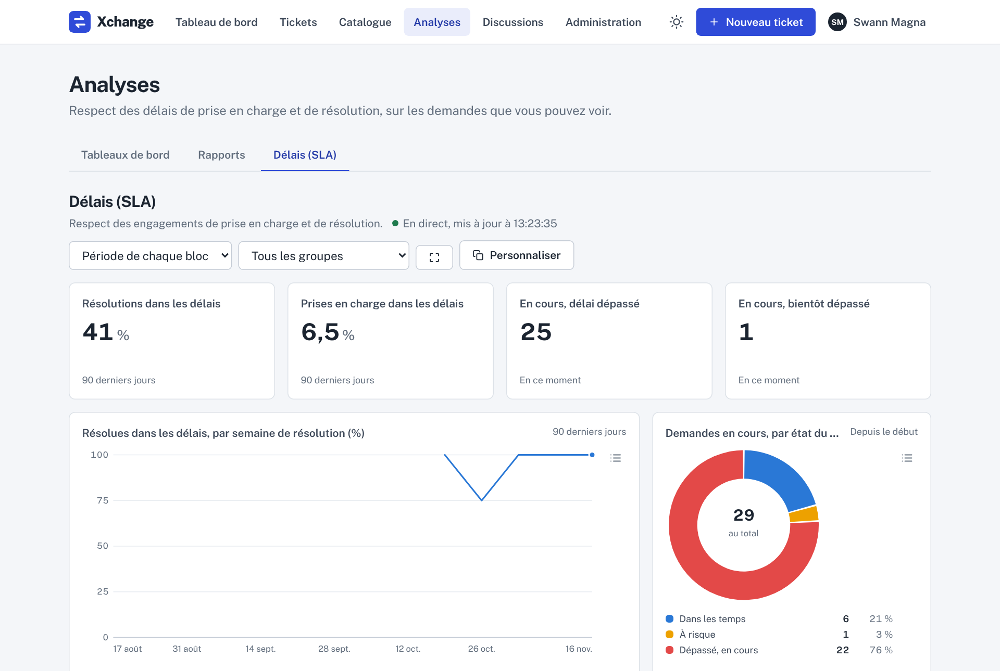
Indicateurs (résolutions et prises en charge dans les délais, demandes en cours dépassées ou bientôt dépassées), évolution par semaine, état des demandes en cours, respect par priorité et par groupe, dépassements par catégorie, et la liste des demandes à traiter en priorité. « Personnaliser » en crée une copie modifiable dans vos tableaux de bord.
Le bouton « Besoin d'aide ? », en bas à droite de chaque page, ouvre un assistant sans intelligence artificielle : la personne décrit son besoin en quelques mots, l'assistant propose les réponses de la foire aux questions et les formulaires du catalogue qui correspondent. Choisir un formulaire l'ouvre avec la description déjà remplie.
Administration > Record producers > Formulaires > Besoins non trouvés
Quand rien ne correspond, ou que la personne indique qu'aucune proposition ne convient, sa phrase est gardée sans son nom pendant 90 jours dans cette carte. Elle montre les formulaires qui manquent, ou les mots à ajouter dans la description d'un formulaire existant. « Vider la liste » l'efface ; sinon la purge RGPD l'efface avec les journaux.
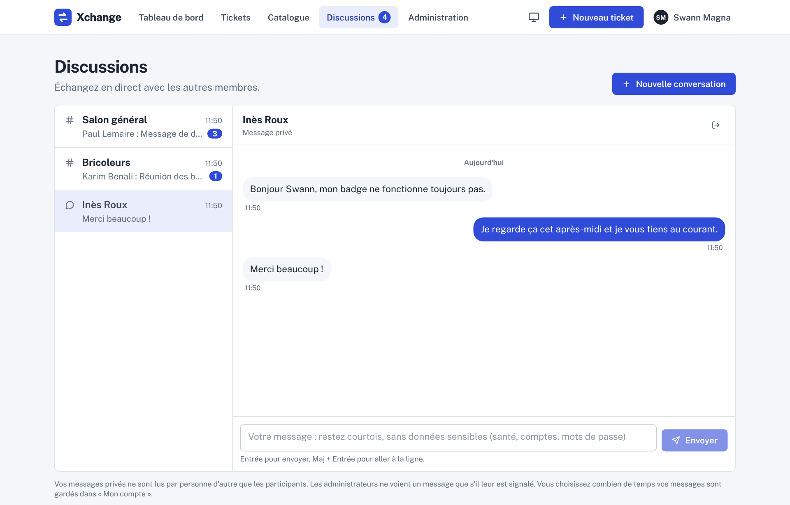
Le menu « Discussions » permet d'échanger en direct, avec un compteur de messages non lus. Quatre sortes de conversations :
Messages de 2 000 caractères au plus, 20 messages par tranche de 30 secondes et par personne. Chacun peut supprimer ses propres messages (« Message supprimé » reste affiché 30 jours). Le choix « pseudonyme seul » est respecté, y compris dans la recherche de personnes.
Administration > Signalements
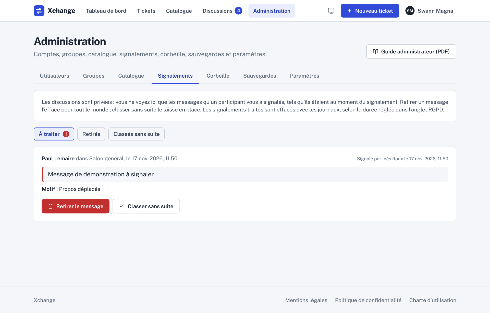
Chaque participant peut signaler le message d'un autre (petit drapeau à côté du message), avec un motif facultatif. Vous recevez un e-mail (événement « Message signalé dans les discussions »). Vous voyez ce message seul, tel qu'il était au moment du signalement, avec son auteur et la personne qui l'a signalé ; l'auteur ne sait pas qui l'a signalé.
Tous les signalements d'un même message sont traités ensemble. Les signalements traités restent consultables (« Retirés », « Classés sans suite ») jusqu'à la purge des journaux. En cas de propos graves (menaces, harcèlement), gardez une trace (capture d'écran) avant de retirer le message.
Chaque personne choisit dans « Mon compte », rubrique Discussions, combien de temps ses messages sont gardés : tant que son compte existe (par défaut), 30 jours, 6 mois ou 1 an. La purge quotidienne efface les messages plus anciens. Elle peut aussi effacer tous ses messages d'un coup. À l'anonymisation d'un compte, ses messages restent signés « Utilisateur supprimé » si vous choisissez de conserver, ou sont effacés si vous choisissez de supprimer.
Le menu « Analyses » est ouvert à tous les comptes. Il contient deux onglets : Tableaux de bord et Rapports.
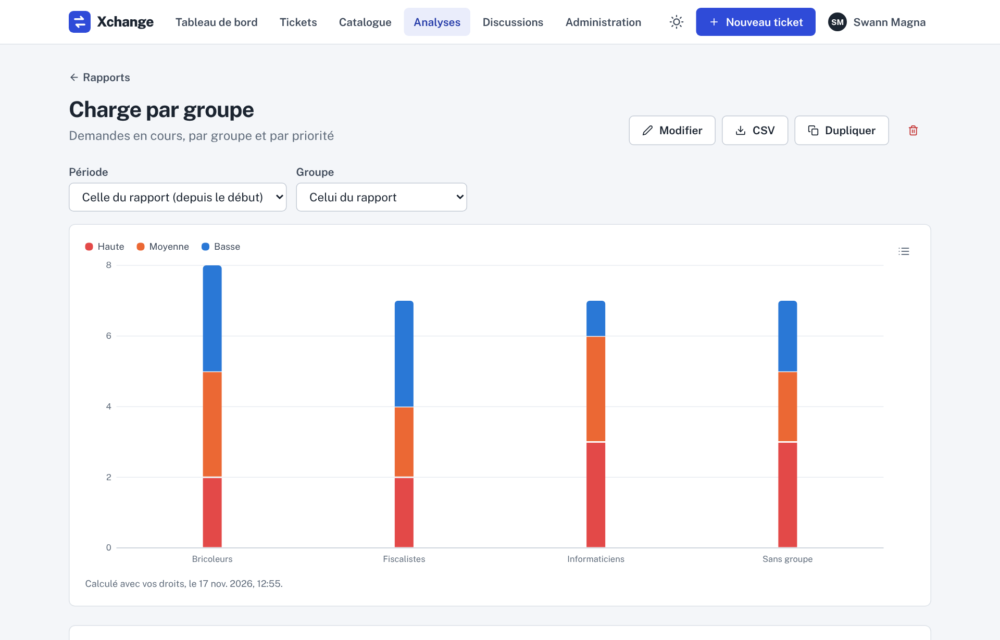
Cinq types : liste de demandes (colonnes et tri au choix), regroupement (par statut, priorité, catégorie, groupe, responsable, demandeur, formulaire, mois, jour de la semaine, avec un second regroupement possible), évolution (créées et résolues par jour, semaine ou mois), indicateur (un chiffre comparé à la période précédente) et carte de chaleur (les jours et heures d'arrivée des demandes). Filtres : période, statut, priorité, catégorie, groupe, formulaire, responsable, demandeur, confidentialité, retard, mot cherché. L'aperçu se met à jour pendant la saisie.
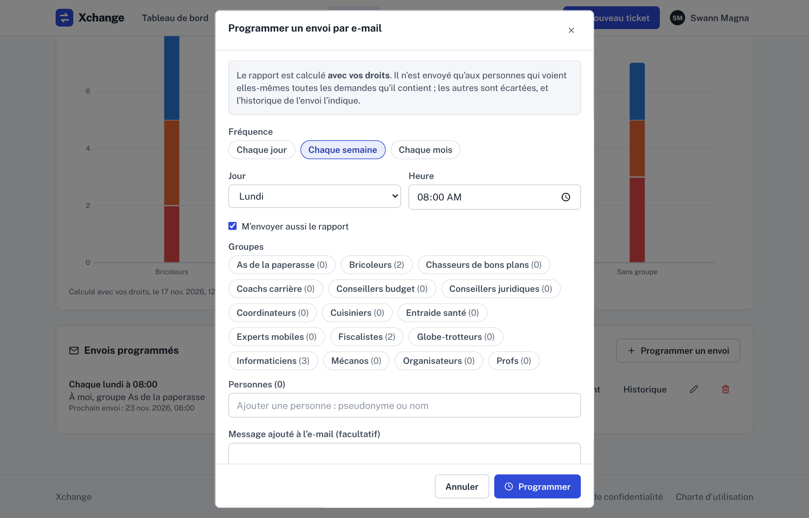
Le créateur d'un rapport peut le faire envoyer par e-mail chaque jour, chaque semaine ou chaque mois, à une heure choisie (heure du PC). L'e-mail contient le rapport mis en forme (100 lignes au plus) et le détail en fichier joint, au format choisi dans l'envoi : Excel (proposé par défaut), CSV ou JSON.
Analyses > Rapports, en bas de la page
Les administrateurs voient la liste des envois programmés de tous les comptes : rapport, créateur, fréquence, nombre de destinataires, prochain envoi. Le contenu des rapports n'y est pas. « Arrêter » coupe un envoi gênant ; son créateur voit qu'il a été arrêté par un administrateur.
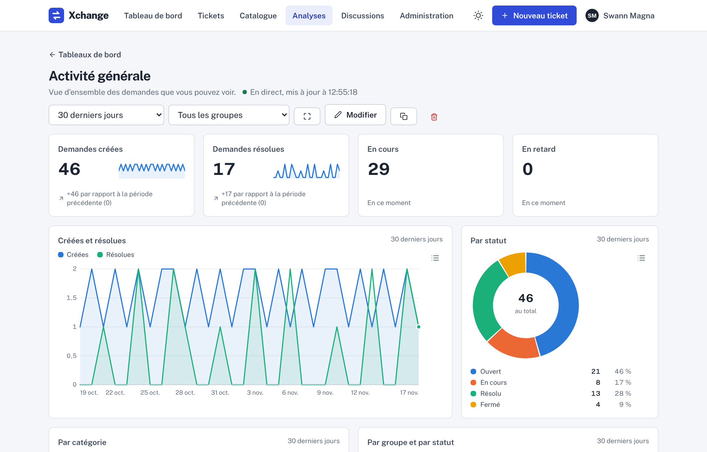
Un tableau de bord est une grille de blocs ; chaque bloc est un petit rapport. Cinq modèles sont proposés : Délais (SLA), Activité générale, Mes groupes, Délais de traitement, Ma file. On peut aussi partir d'un tableau vide.
Les rapports, tableaux de bord et envois d'une personne sont supprimés quand son compte est anonymisé ; l'historique des envois est purgé avec les journaux.
Administration > Paramètres > Catégories et priorités
Administration > Paramètres > Apparence
Chaque utilisateur choisit le mode clair, sombre ou automatique avec le bouton de la barre du haut ; ce n'est pas un réglage d'administration.
Administration > Paramètres > Notifications
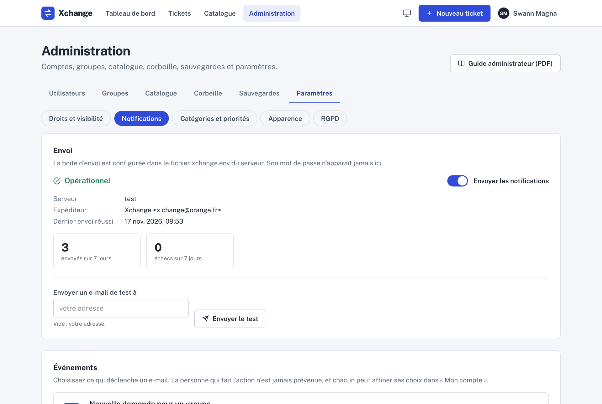
Les e-mails partent de la boîte configurée dans C:\Xchange\xchange.env (chapitre 15). Le mot de passe n'apparaît jamais dans l'application.
SMTP_HOST=smtp.orange.fr SMTP_PORT=465 SMTP_USER=x.change@orange.fr SMTP_PASSWORD=(mot de passe de la boîte) MAIL_FROM=x.change@orange.fr APP_URL=https://micolomike.taila5de36.ts.net
Après modification du fichier, lancez redemarrer.ps1, puis « Envoyer le test ».
La personne qui fait une action n'est jamais prévenue, et chacun peut affiner ou couper ses e-mails dans « Mon compte ». L'avertissement envoyé avant l'anonymisation d'un compte inactif est un message de service : il part même si la personne a coupé ses notifications.
Administration > Paramètres > RGPD
Depuis « Mon compte », rubrique « Mes données », chacun peut demander l'anonymisation ou la suppression de son compte, la correction d'une information, ou autre chose. Vous recevez un e-mail. Vous avez un mois pour répondre ; la date limite s'affiche, en rouge si elle est dépassée.
Irréversible. Le nom, l'identifiant et l'e-mail sont remplacés par « Utilisateur supprimé n°X » ; le mot de passe, la double authentification, les sessions, les navigateurs de confiance, les pièces jointes déposées, les groupes, les demandes d'adhésion et les journaux qui la concernent sont effacés. Vous choisissez de conserver ses demandes et messages (sans son nom) ou de les supprimer. Pour confirmer, il faut retaper son identifiant.
Une fois par jour, Xchange :
La carte « Conservation et purge » montre ce que fera la prochaine purge, et permet de la lancer à la main. 0 désactive une règle.
{{inactiveMonths}}, {{logMonths}} et {{trashDays}} affichent les durées réglées : laissez-les tels quels.MFA_REQUIRED=true) : code à 6 chiffres d'une appli (Microsoft Authenticator, Google Authenticator…), et 10 codes de secours à usage unique.À la saisie du code, la case « Faire confiance à ce navigateur pendant 30 jours » évite de redemander le code sur cet appareil. Le mot de passe reste demandé. La confiance tombe à l'expiration, au changement de mot de passe, à la réinitialisation de la double authentification, ou quand la personne la retire dans « Mon compte ». La durée se règle avec TRUSTED_DEVICE_DAYS (1 à 90 jours).
10 mots de passe faux de suite bloquent le compte 15 minutes ; 10 codes faux de suite bloquent la vérification 15 minutes. Le blocage se lève tout seul.
Sur le PC serveur, dans un PowerShell lancé en administrateur :
cd C:\Xchange\app\backend node --env-file=C:\Xchange\xchange.env scripts\reinitialiser-mfa.js <identifiant>
Administration > Sauvegardes
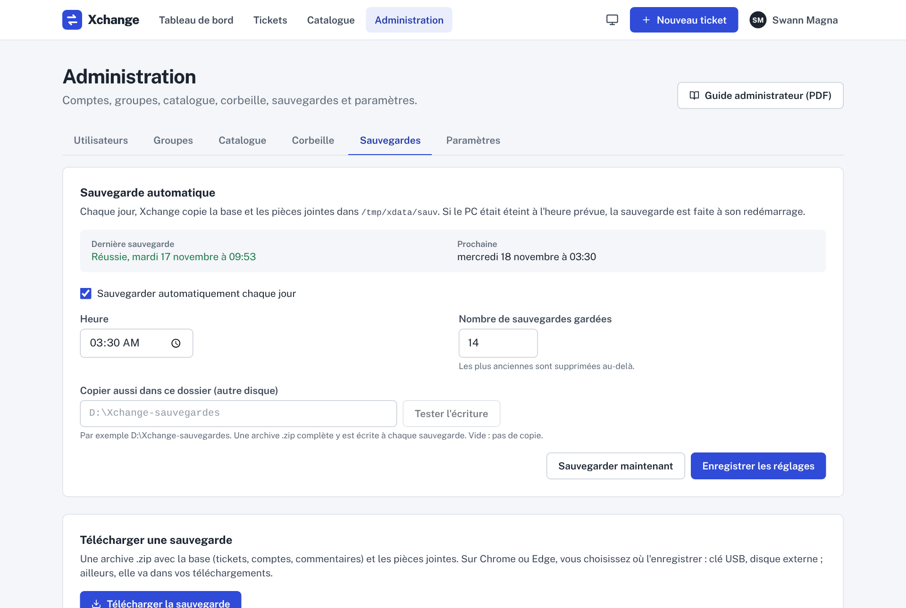
C:\Xchange\sauvegardes et garde le nombre de sauvegardes réglé (14 par défaut). Si le PC était éteint à l'heure prévue, la sauvegarde est faite au démarrage suivant.D:\Xchange-sauvegardes. Le dossier doit d'abord être autorisé avec autoriser-dossier.ps1 -Dossier D:\Xchange-sauvegardes.« Télécharger » produit une archive .zip complète, à ranger hors du PC (clé USB, disque externe). Sur Chrome et Edge, vous choisissez l'emplacement.
Dans un PowerShell administrateur :
powershell -ExecutionPolicy Bypass -File C:\Xchange\app\deploy\windows\restaurer.ps1
Le script propose les sauvegardes disponibles. Pour une archive téléchargée, ajoutez -Fichier <chemin\archive.zip>. L'état actuel est sauvegardé avant la restauration.
Xchange tourne sur le PC sous le compte Windows « Service local », sans droits administrateur, dans C:\Xchange, et n'écoute que sur le PC lui-même. L'accès depuis Internet passe par Tailscale Funnel, à l'adresse https://micolomike.taila5de36.ts.net, sans port ouvert sur la box.
Chacun se lance dans un PowerShell ouvert en administrateur :
powershell -ExecutionPolicy Bypass -File C:\Xchange\app\deploy\windows\<script>
| Script | Rôle |
|---|---|
mettre-a-jour.ps1 | Sauvegarde, récupère la dernière version, recompile et redémarre. Faites ensuite Ctrl+F5 dans le navigateur. |
etat.ps1 | État de l'application, de l'accès Internet, des sauvegardes, fin du journal. |
redemarrer.ps1 | Redémarre Xchange, par exemple après une modification de xchange.env. |
restaurer.ps1 | Remet une sauvegarde (chapitre 14). |
autoriser-dossier.ps1 -Dossier <chemin> | Crée un dossier et autorise Xchange à y écrire. |
installer.ps1 | Installe ou réinstalle, en conservant configuration et données. |
desinstaller.ps1 | Coupe l'accès Internet, supprime les tâches et le compte ; -SupprimerDonnees efface tout. |
C:\Xchange\xchange.env ne s'ouvre qu'avec le Bloc-notes lancé en administrateur. Il contient des secrets : ne le partagez pas et n'en faites pas de capture d'écran.
| Variable | Rôle |
|---|---|
JWT_SECRET | Clé qui signe les sessions. La changer déconnecte tout le monde. |
ALLOW_REGISTRATION | false pour fermer l'inscription libre. |
MFA_REQUIRED | false pour rendre la double authentification facultative. |
TRUSTED_DEVICE_DAYS | Durée de confiance d'un navigateur (30 par défaut). |
SMTP_*, MAIL_FROM, APP_URL | Envoi des e-mails (chapitre 11). |
BACKUP_DIR | Dossier des sauvegardes automatiques. L'heure, le nombre gardé et la copie se règlent dans l'onglet Sauvegardes. |
MAX_UPLOAD_MB | Taille maximale d'une pièce jointe (10 par défaut). |
LOGIN_MAX_FAILURES, LOGIN_LOCK_MINUTES | Blocage après des échecs de connexion. |
Toute modification demande redemarrer.ps1.
C:\Xchange\journaux\xchange.log trace les démarrages, sauvegardes, purges et erreurs. Il est remplacé quand il dépasse 5 Mo (l'ancien est gardé en xchange.ancien.log). Il ne contient ni mot de passe ni adresse e-mail.
Administration > Journal système
C'est le premier endroit où regarder quand quelque chose ne va pas. Il regroupe :
La source Utilisateurs trace ce que fait chaque compte et ce qui lui arrive : inscription, création par un administrateur, connexions réussies (avec le type de navigateur et la méthode : double authentification, code de secours, navigateur de confiance), échecs de connexion et blocages, changement de mot de passe, champs du profil modifiés, choix d'affichage, préférences de notification, acceptation de la charte, nouveaux codes de secours, export des données, demandes RGPD, demandes créées ou mises à la corbeille, demandes d'adhésion et départs de groupe, avertissement d'inactivité et anonymisation automatique.
Ne sont jamais écrits : les adresses IP, les mots de passe, les identifiants tapés lors d'un échec, ni les nouvelles valeurs du profil (seul le nom du champ apparaît). Un échec avec un identifiant inconnu n'est rattaché à aucun compte. Les modifications d'une demande restent dans l'historique de la demande elle-même.
La colonne Compte indique le compte concerné, y compris pour les actions d'administration. Cliquez sur un nom, ou sur le bouton « Journal du compte » d'une ligne de l'onglet Utilisateurs, pour ne voir que ce qui concerne ce compte ou ce qu'il a fait ; la pastille « Compte : … » retire ce filtre. La personne retrouve ces lignes dans l'export de ses données (rubrique account_activity).
Les trois compteurs du haut donnent le nombre d'erreurs, d'avertissements et d'informations des dernières 24 heures ; un clic filtre la liste. Filtres par niveau, source, dates et mot cherché ; « Actualiser toutes les 10 s » pour suivre en direct ; « Exporter » télécharge ce qui est filtré (10 000 lignes au plus) en Excel, CSV ou JSON. Le journal ne se modifie pas et ne se vide pas à la main : il est purgé avec les autres journaux, après la durée réglée dans l'onglet RGPD (12 mois par défaut). Les mêmes lignes, sauf l'activité des comptes, sont écrites dans C:\Xchange\journaux.
| Situation | Que faire |
|---|---|
| Le site ne répond pas depuis Internet | Vérifiez que le PC est allumé et connecté, puis lancez etat.ps1. Si l'application tourne mais pas l'accès Internet, vérifiez Tailscale. |
| Rien de nouveau après une mise à jour | Relancez mettre-a-jour.ps1, puis Ctrl+F5 dans le navigateur. |
Xchange ne redémarre pas après une modification de xchange.env | Une ligne est mal écrite : redemarrer.ps1 affiche la fin du journal avec l'erreur. |
| Les e-mails ne partent pas | Paramètres > Notifications : lisez la dernière erreur et le journal des envois, puis envoyez un test. Vérifiez que l'interrupteur général est actif. |
| Quelqu'un a perdu son téléphone | Utilisateurs : réinitialisez sa double authentification, ou il utilise un code de secours. |
| Quelqu'un ne voit pas une demande | Vérifiez son groupe, la matrice des droits, la règle de la catégorie, et si la demande est confidentielle. |
| Une demande reste sans réponse | Le groupe a-t-il des membres ? Le tableau de bord signale les demandes de vos groupes sans responsable. |
| La sauvegarde vers D: échoue | Disque débranché, plein, ou dossier non autorisé : relancez autoriser-dossier.ps1. |
| Les messages des discussions n'arrivent qu'en rechargeant la page | La page affiche « Connexion perdue, nouvelle tentative » : le PC ou l'accès Internet a été coupé, la connexion revient seule. Si cela dure, relancez redemarrer.ps1. |
| Quelqu'un ne voit pas le salon de son groupe | Vérifiez qu'il est bien membre du groupe (Groupes), puis qu'il recharge la page Discussions. |
| Quelqu'un ne reçoit pas un rapport programmé | Ouvrez l'historique de l'envoi (créateur du rapport) : il dit si la personne a été écartée (droits insuffisants, choix de ne pas recevoir, pas d'adresse) ou si l'envoi a échoué. |
| Un tableau de bord ne se met plus à jour en direct | Le point vert « En direct » est gris : la connexion a été coupée, elle revient seule ; sinon les blocs se recalculent chaque minute. |
| Un compte est bloqué | Attendez 15 minutes, ou réinitialisez son mot de passe. |
mettre-a-jour.ps1.{{inactiveMonths}}, {{logMonths}}, {{trashDays}}).